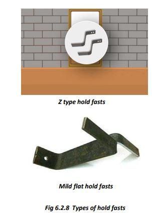
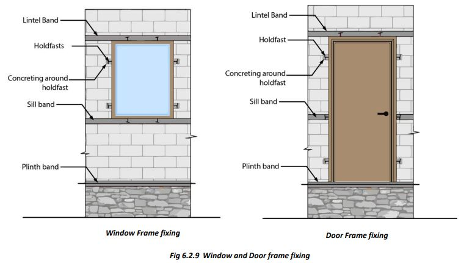

Fixing Doors and Window Frames in Masonry Walls
 
● Door and window frames are fixed in the walls during masonry work. Steel holdfasts are fixed to the frames, which are embedded in the walls with cement concrete. The middle holdfast of the door frame is fixed into the RCC sill band.
● Window frames have holdfasts fixed to all four sides. The holdfasts fixed to the vertical members are fixed to the walls, and the top and bottom holdfasts are fixed to the RCC lintel and sill bands.
● For earthquake (EQ) safety, make strong door and window frames using steel T-sections. Weld steel grills to the window frames.
● For earthquake safety, the door/window openings should be small and must be at least 60 cm away from wall corners.
● Two openings in a wall should be separated by at least 60 cm masonry.
● All masonry walls should be bound together by 75 mm thick RCC bands at the plinth, lintel, and roof levels.
● Provide vertical bars or RCC tie columns at masonry wall corners as per design.
● Once the RCC plinth band is cast, a strong door frame made of steel T-section should be fixed to it.
● Position the door frames over the plinth at their exact locations. The sides of the frame should be in plumb. Check several times as the masonry goes up. Use shims if necessary to adjust the frame for level and plumb.
● Secure the door frames to the surrounding structure using holdfasts welded to the frames. These are placed as follows:
i) One pair (one on each side) fixed 300mm above the plinth band,
ii) The middle pair fixed into the sill RCC band,
iii) One pair fixed 300mm below the lintel band,
iv) One pair welded at the top, extending into the RCC lintel band.
● The holdfasts are fixed into the masonry or RCC bands as the masonry goes up. Frames fixed later may become loose and will not provide sufficient safety against earthquakes.
● The holdfasts of window frames are also fixed in the walls as the masonry goes up.
i) The bottom pair is fixed into the RCC sill band.
ii) The holdfasts fixed to the vertical sides of the frame are fixed into the masonry of walls as the masonry work progresses with cement concrete.
iii) The top pair is fixed into the RCC lintel band.
Ensure Correct Level and Verticality of Door/Window Frames
Fix all door and window frames during masonry work. Fixing them later makes the holdfast joints loose.
Step 10: Fixing Door-Window Frames
● Door frames have 8 holdfasts. Two near the lower end are embedded in walls using cement concrete. Two are at the window sill level, embedded in the RCC sill band. Two are about 250 mm below the top, embedded in masonry using cement concrete. Two holdfasts are fixed to the top of the frame, embedded in the lintel band. This process strengthens the door opening.
● In the case of window frames, two more holdfasts are provided at the bottom of the frame, which are embedded in the RCC sill band.